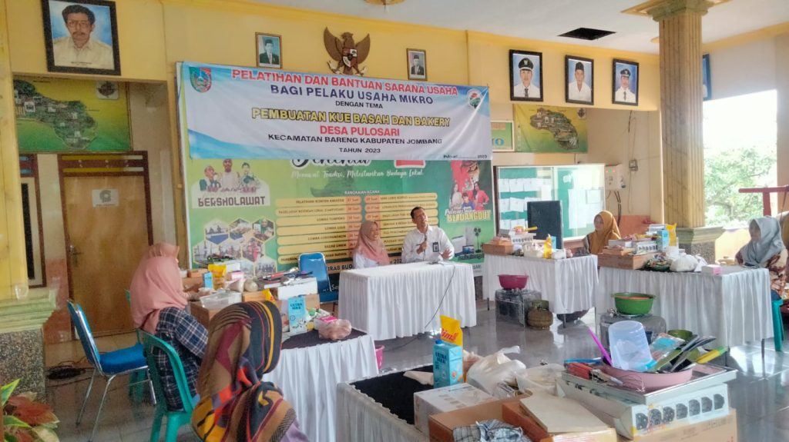

Dipublikasikan pada: 12 Mei 2025
Pemerintah Desa Kuta Ujung Gelar Pelatihan Kewirausahaan
Pemerintah Desa Kuta Ujung menyelenggarakan pelatihan kewirausahaan yang diikuti oleh puluhan warga yang memiliki usaha mikro maupun yang baru ingin memulai usaha. Kegiatan ini bertujuan untuk meningkatkan keterampilan berwirausaha dan memperkuat UMKM lokal.
Materi yang disampaikan mencakup manajemen usaha kecil, pemasaran digital, pengelolaan keuangan, dan strategi membangun brand. Narasumber dihadirkan dari Dinas Koperasi dan pelaku usaha sukses yang sudah berpengalaman di bidangnya.
Peserta pelatihan juga mendapatkan sertifikat dan berkesempatan mempromosikan produknya melalui platform digital desa. Beberapa warga bahkan langsung merancang ide bisnis yang akan mereka jalankan setelah pelatihan selesai.
Kegiatan ini diharapkan mampu menumbuhkan semangat kewirausahaan dan menciptakan lapangan kerja baru di lingkungan desa.
← Kembali ke Beranda